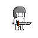
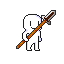
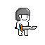
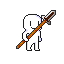
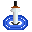
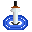

Roguelike Tower Defense
개발자
WooGeun Nam
- cowzza1@naver.com
개발 도구
- 엔진 : unity
- 언어 : C#
- 디자인 도구 : Aseprite
게임 개요
핵심 컨셉
- 로그라이크 요소와 타워 디펜스의 결합
- 웨이브별 전략적 선택과 성장
- 장비 파밍과 난이도 강화
타겟 플레이어
- 전략 게임을 선호하는 게이머
- 로그라이크 장르 팬층
- 낮은 난이도를 추구하는 유저
핵심 시스템
타워 시스템
기본 설계 방향
보스 몬스터 특화형
단일 타겟, 높은 데미지
일반 몬스터 특화형
다중 타겟, 낮은 데미지
근거리형 타워
낮은 사거리, 높은 데미지
원거리형 타워
높은 사거리, 낮은 데미지
타워 종류
- 타워 생산 비용 : TC(TowerCost) 단위 / 인게임에서는 이미지로 표기
- 타워 공격 타입 : 물리형, 마법형, 복합형
- 타워의 업그레이드는 타워의 공격 타입에 따라 영향을 받음 (복합형은 두 종류의 업그레이드를 합계로 받음)
기본 타워
50TC / 복합형
기본적인 단일 공격 타워
검사 타워
70TC / 물리형
높은 공격 속도와 단일 데미지
창술사 타워
150TC / 물리형
최대 4개 대상 동시 공격
궁수 타워
130TC / 물리형
넓은 범위의 다중 공격
레이저 타워
120TC / 마법형
높은 DPS의 단일 타겟 공격
사제 타워
100TC / 마법형
적 방어력 감소 효과
스킬 시스템
- 타워별 특수능력을 스킬패널에서 제공
- SP 초기값: 0, 최대값: 200
- 웨이브 클리어 시 20 SP 자동 지급
- 모든 스킬 20 SP 소모
- 웨이브당 스킬별 1회 사용 제한
웨이브 시스템
일반 웨이브
30마리 몬스터 출현
네임드
특정 웨이브 등장, 강화된 능력치
보스
최종웨이브 클리어 목표
보상 시스템
기본 보상
웨이브 클리어 시 20 SP
웨이브 처치 보상
개별 적 1개체당 골드 보상, 웨이브 진행도에 따라 증가
선택형 추가 보상
매 웨이브 종료 시 2개의 보상 중 1개 선택
2개의 보상은 중복 가능하다
개별 보상은 선택지, 수치 2개의 랜덤을 통해 확정된다
- HP 회복: 1~4 포인트 (최대 체력 상태에서는 등장 X)
- SP 추가: 20~60 포인트
- 골드: 10~120
- 랜덤 타워 자동 설치
- 무료 물리/마법 업그레이드
기술적 특징
그래픽 & UI
- 픽셀 아트 그래픽 스타일
- UI 간소화 설계
- TAB 키를 통한 UI ON/OFF 기능
시스템 설계
- 모듈형 타워 시스템 (State 패턴): `IWeaponState` 인터페이스를 기반으로 타워의 행동(탐색, 공격)을 명확하게 분리하여 확장성을 높였습니다.
- 이벤트 기반 UI 업데이트: `UIEventManager`를 통해 게임 데이터와 UI를 분리, 데이터 변경 시 UI가 실시간으로 반응하도록 설계하여 유지보수성을 강화했습니다.
- 오브젝트 풀링: 성능 최적화를 위해 적, 발사체 등 반복 생성되는 오브젝트를 재활용하는 시스템을 구현했습니다.
- 중앙 집중형 사운드 관리: `SoundManager`를 통해 BGM, SFX를 관리하며, 여러 개의 지속 사운드를 독립적으로 제어하는 기능을 구현했습니다.
- 애니메이션 재사용성: `Animator Override Controller`를 활용하여 모든 타워가 하나의 로직을 공유하되, 각 타워의 애니메이션 클립만 교체하도록 설계하여 효율성을 높였습니다.
- 데이터 기반 설계: `ScriptableObject`를 활용하여 타워 밸런스를 코드 수정 없이 쉽게 조절할 수 있도록 설계했습니다.
- 랜덤 맵 생성: 매 게임마다 새로운 경로의 맵을 생성하여 리플레이 가치를 증대시켰습니다.
게임 디자인
디자인 방향성
캐릭터
- 타워 및 몬스터 캐릭터 픽셀 아트 제작
- 타워 애니메이션: 모든 타워의 대기(Idle) 및 공격(Attack) 애니메이션을 구현
 



아이콘
- 타워의 특수능력에 부합하는 스킬 아이콘 제작
- 동적인 상황의 경우 필요에따라 애니메이션으로 제작하거나 Unity에서 구현
 

맵(타일셋)
- 타워디펜스에 최적화된 경로를 가진 타일셋 제작
- 웨이브 시작 및 종료지점 제작

오브젝트
- 맵에 필요한 오브젝트
- 투사체와 같은 추가 디자인 요소

게임 음악
데모 & 테스트 빌드
※ 폴더 내 2DTowerDefense.exe 파일을 통해 게임 실행
Alpha Test Build (v0.3.0)
※ 모든 파일을 같은 폴더에 다운로드 한 뒤 TestAlpha.zip을 압축 해제하세요.
주요 업데이트
- 게임 타이틀 및 설정 메뉴: 해상도, 볼륨 조절 등 기본 환경 설정 기능 추가
- 타워 공격 애니메이션: 모든 타워의 공격 모션에 애니메이션 적용 및 공격 속도와 동기화
- 사운드 시스템: BGM 및 모든 효과음(SFX) 추가, 개별 사운드 제어 시스템 구현
- 성능 최적화: 오브젝트 풀링 시스템을 도입하여 게임 내 오브젝트 생성/파괴 비용 감소
- 코드 리팩토링: State 패턴 적용, UI 업데이트 로직 개선 등 코드 구조 전반 개선
v0.2.0
주요 업데이트
- 랜덤 맵 생성: 스테이지 시작 시 맵이 랜덤하게 생성되어 다양한 전략적 플레이 유도
- UI 숨김 기능: TAB 키를 통해 UI를 켜고 끌 수 있는 기능 추가
- 코드 구조 개선: 웨이브, UI 등 내부 시스템 리팩토링 진행
밸런스 조정
- 화살비 스킬 데미지 하향
- 낙뢰 스킬 데미지 상향 및 방어력 감소 효과 추가
v0.1.0 : 2024-10-11
다운로드최초 데모 버전
- 타워 설치 및 정보 표시 기능
- 스킬 사용 기능
- 웨이브 시스템 및 보상
- 기본 UI 및 게임 속도 제어
- 타워 업그레이드 기능
피드백
- 기능적 문제: 오디오 크기 조절, SP 상한선 초과, 랜덤 타워 겹침, 몬스터 경로 이탈
- 밸런스: 특정 스킬(화살비, 레이저) 하향 및 낙뢰 스킬 상향 필요
- 개선 필요: 마우스 오버 시 스킬 설명 UI 필요
DEV_LOG
1. 몬스터 경로이탈
- 문제점 : n번 지점에서 n+1번 지점 이동 시 발생하는 문제
- 개선 : 현재 위치와 목표 지점 간의 거리와 방향을 계산 하여 목표 지점으로 이동 (목표지점 이상으로 이동 X)
└ n+1번 방향으로 직진 후 if상황 (두번째지점과 인접할 떄) 방향을 전환
└ 패널 등을 열거나 알트탭 등의 지연 발생 시 방향전환하지 못하고 기존 방향으로 직진
2. 적 추적 알고리즘 최적화
- 문제점 : 먼저 등장한 적이 우선적으로 처리되지 않는 문제
- 개선 : 먼저 등장한 적을 우선순위를 높게 주어서 해결
└ 현재 타워와 몬스터간의 거리를 최우선하여 공격 우선순위를 설정 함
└ 공격거리내 적 탐지 시 생성 순서대로 탐색하고 break문을 통한 해결
3. 설치된 타워 선택 불가능 오류
- 문제점 : 일정 이상 타워 설치 시 타워 선택(UI 제공) 안되는 오류 발생
- 개선 : 타워 설치 시 Z축 미 지정으로 인해 설치 구문에 -1로 지정되게 변경
4. 타일맵에 Box Collider 및 태그 부여하여 타워 배치 UI 구현 시 문제점 해결
5. 검사타워 공격 시 에러
- 문제점 : 검사타워 공격 시 NullException 발생
- 개선 : 최종 AttackEnemy 함수 호출 시에도 attackTarget의 null상태 확인 후 공격
6. HitEffect 이슈
[비정상적인 출력]
- 문제점 : 공격속도가 빠르면 이펙트가 정상적으로 출력되지 않음
- 개선 : 이펙트를 Instantiate로 clone하여 특정 초 뒤에 destroy 함
[판매 시 이펙트 미삭제]
- 문제점 : 이펙트 발생도중 타워 판매 시 이펙트가 Destroy 되지 않는 문제
- 개선 : Destroy(clone, time) 을 통해 타워가 Destroy 되면 같이 삭제 되도록 수정
7. 웨이브 랜덤 보상이슈
[SP 초과 보상]
- 문제점 : SP 초과 보상
- 개선 : 조건문 추가하여 초과되지 않게 수정
[랜덤보상 타워 겹침]
- 문제점 : 랜덤보상으로 설치되는 랜덤타워 겹침 현상 발생
- 개선 : 타워 설치 전 타일의 타워 설치여부 확인 후 비어있는 타일에 설치
* 모든 타일이 설치된 타워면 에러 발생 확률 있음
8. UI 실시간 업데이트 문제
- 문제점 : 플레이어의 SP, Gold 값이 변경될 때 UI가 즉각적으로 업데이트되지 않는 문제
- 개선 : 데이터 변경 시 이벤트가 발생하도록 프로퍼티(Property) 구조로 변경하고, `UIEventManager`를 통해 UI가 이를 구독하여 즉시 반영하도록 수정
9. 타워 공격력 표기 문제
- 문제점 : 버프 스킬 등으로 인한 추가 공격력이 합산된 값으로만 표시되어, 플레이어가 순수 공격력을 파악하기 어려움
- 개선 : 기본, 업그레이드, 버프 공격력을 별도로 계산하고 UI에 구분하여 표시 (예: 10 + 2 + 3)하도록 개선
10. 스킬 효과 적용 오류
- 문제점 : 슬로우(Slow) 스킬 등이 적의 이동 속도를 제대로 제어하지 못하는 문제
- 개선 : `StatusEffect` 스크립트가 `Enemy` 컴포넌트에 직접 접근하여 이동 속도를 제어하고, 효과 종료 시 원래 속도로 정확히 복원하도록 수정
개발 계획
주요 로드맵
1. 로그라이크 장비 시스템
장비 장착, 장비 파밍 시스템 개발
2. 게임 준비 단계 추가
게임 입장 전 장비 장착, 난이도 설정 기능 추가
3. 몬스터 시드 시스템
게임마다 랜덤한 몬스터 조합 등장
기타 개발 과제
- 맵 난이도에 따라 웨이브 보상 차등 설계
- 신규 유저를 위한 튜토리얼 기능 추가
- 타워 및 스킬 버튼에 마우스 오버 시 설명 UI 추가
- 기타 버그 수정 및 지속적인 개선사항 적용